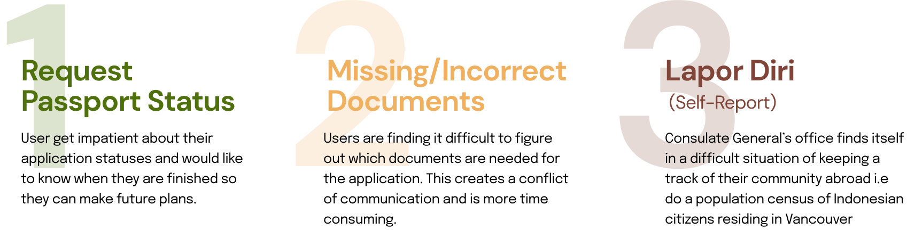
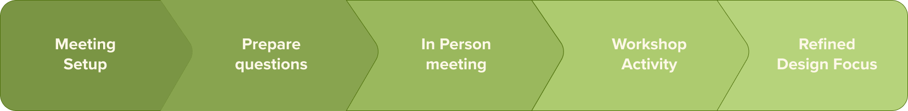
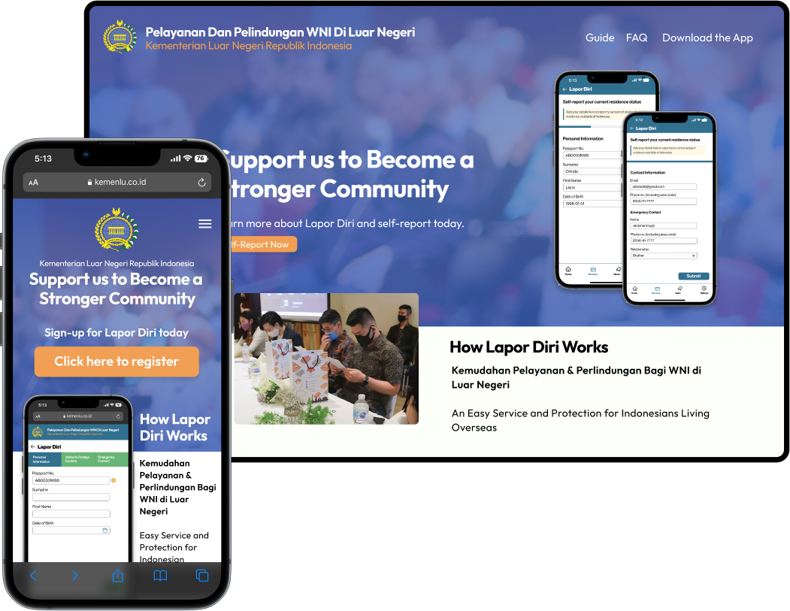
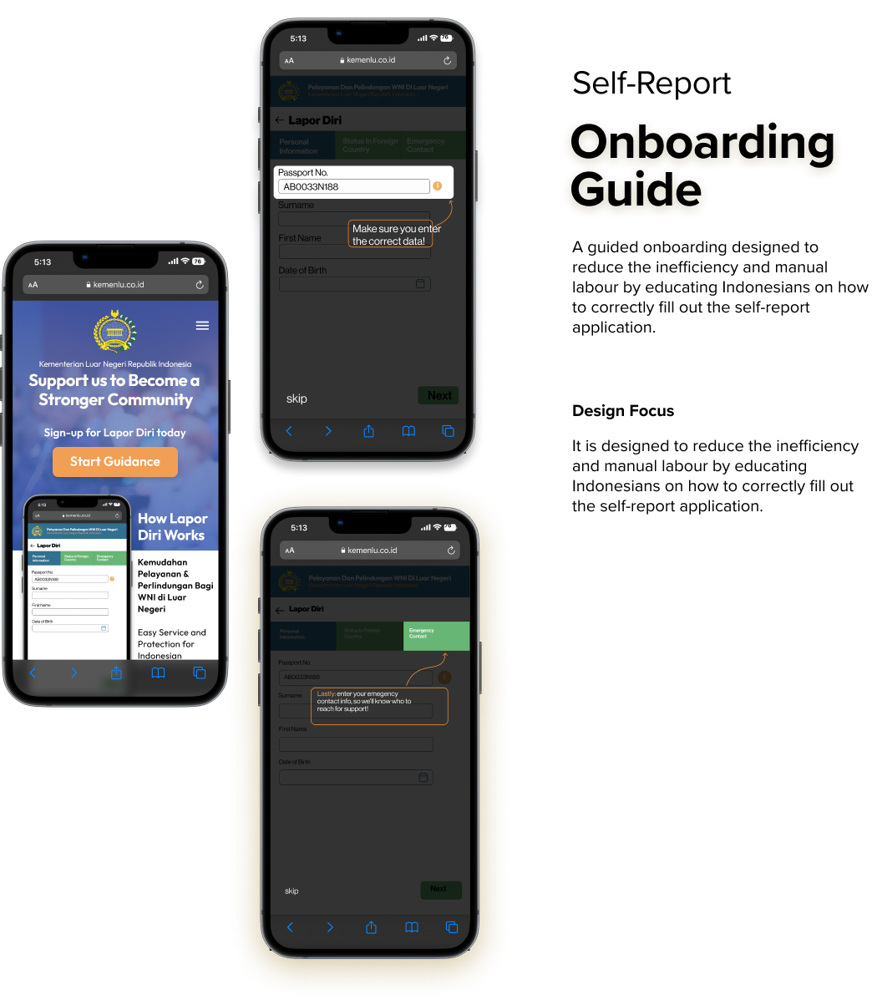

Self Report Onboarding guide
The concept of this design is an interactive onboarding guide that helps users learn how to self-report correctly. Through the use of a self-report tutorial, the onboarding guide breaks down the self-report application step by step with highlighted sections to indicate where users should enter information and most importantly, what type of information should be entered.The guide conveniently links to the consulate’s portal for self-report applications for users to complete one if they so choose after completing the guided tutorial.
Client
The Consulate General of Indonesia, Vancouver
Role
UX/UI Designer
Main Contact person
Researcher
Tools
Figma
Miro
Participant Group Poster
One of the first steps for us to do in this project was to create a poster that Introduces who the client group is. this is done after our initial visit and interview with the Consulate

Initial Concerns
Immediately after meeting with a representative of the Consulate, we were able to identify some of the main concerns or issues that exists within the consulate.

We realized that the issues are within their passport renewal services and their Lapor Diri program (Self Report)
Personas
From then we were asked to create three personas that would be our main target audiences for a potential design interaction solution


Initial Concept
From the personas we were able to generate three possible design solutions that could potentially fix the struggles that the Consulate Has


Journey Framework
Journey frameworks are created to visualize the steps that a user will take upon using each of our proposed solutions. The 3 frameworks presented below are in respect to the three initial concept we have made


Participant Group Workshop
After proposing the three concept to our client, we invited them to collaborate on a workshop that would have them taking part in giving our team feedback and generate a more focused design concept. Through the workshop we found out the problem isn't actually on Passport renewals, but instead the root cause is on how little Indonesian citizens do their self-report.

Workshop Findings
Reframed Design focus
Looking back, we were presented with several design opportunities but after conducting more user research and reflecting on our interview results, we reframe our initial concept to be:
Focus on reducing inefficiency and manual labour by designing a cost-effective landing page or onboarding process that will be implemented in an upcoming seminar to educate Indonesians on how to correctly fill out a self-report application
Final Concept

Landing Page
We designed the final concept with the upcoming Self Report seminar in mind. The landing page will act as a port of entry for attendees of the seminar to view and go through the Interactive Onboarding guide to correctlyfill out a self report form

Moving Forward
The next steps we took is to Solidifying our prototype concept and creating a functioning prototype. Eventually we are planning to present it to the consulate for us to develop further.